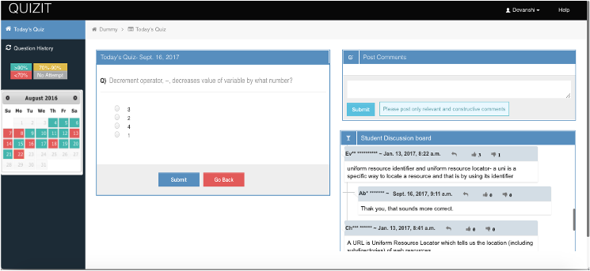
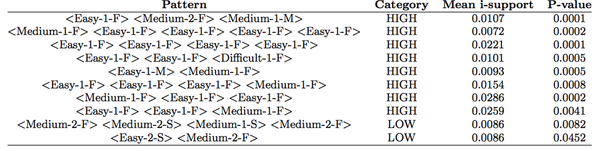

Behavior Analytics & Modeling
- Modeling Problem-Solving Tactics
- Modeling Studying Persistency
Research Platform:

- Data: 600+ users/semester student’s attempts, time, reflection, success rate, sessions, etc.
- Learning Sciences principles:
- Distributed practice (Rohrer, 2015)
- Retrieval practice and testing effects (Roediger & Butler, 2011)
- Reflection and metacognition (Hacker, Dunlosky, & Graesser, 1998; Zimmerman & Schunk, 2012)
- Feedback (Butler & Winne, 1995; Shute, 2008)
- Peer interaction (Roscoe & Chi, 2007; Topping, 2005)
- QuizIT design and evaluation related articles:
- Alzaid, M., & Hsiao, S. (2019). Utilising problem-solving: from self-assessment to self regulating. New Review of Hypermedia and Multimedia, 25(3), 222-244.
- Alzaid, M., Trivedi, D., & Hsiao, I. H. (2017, October). The effects of bite-size distributed practices for programming novices. In 2017 IEEE Frontiers in Education Conference (FIE) (pp. 1-9). IEEE.
Underlying Hypotheses:
H1: Students’ problem solving tactics can be classified based on the sequences of their problem solving actions, and behavioral patterns are correlated to the performances.
H2: Students’ studying patterns can be clustered as click-stream (response-stream) data, and study persistency positively affects performances.
Modeling Problem-Solving Tactics
Building Action Sequences
Action sequence formed by action segment {Complexity, Correctness, Duration}
- Complexity ∈ {Easy, Moderate, Difficult}
- Correctness ∈ {1, 2}
- Duration ∈ {F, S, M, L, VL, XL}
For instance, <Easy-1-F> represents a question of easy difficulty that was answered correctly on the first attempt.
Differential Sequential Mining
Action sequence assigned to students performance by median score to split into Higher performing and Lower performing students.
Metrics to measure pattern frequency:
- s-frequency : # of sequences in a database containing a specific pattern
- i-frequency : # of times a pattern appearing in a single sequence
- s-support >= 0.3
- i-support considered maximum gap constraint : 2
- p-value threshold was set at 0.05
Feature selection & modeling
- 35 s-frequent patterns: 23 high-performing and 12 low-performing
- CFS with 10-fold CV used for feature selection (patterns in at least 5 CV included)
- 8 high-performing and 2 poor-performing patterns retrieved from CFS

Found problem solving tactics
Lessons Learned
Persistent practicing feature consistently being important feature regardless what model it is.
Publications
Mandal, P. P. (2017). Behavioral Pattern Mining and Modeling in Programming Problem Solving (Masters Thesis, Arizona State University)
Mandal, P., & Hsiao, I. H. (2018). Using Differential Mining to Explore Bite-Size Problem Solving Practices. In Educational Data Mining in Computer Science Education (CSEDM) Workshop
Modeling Studying Persistency
Modeling Persistence
TBA
Behavioral Analytics on Persistence and Regularity
TBA
Findings
TBA
Publications
- Chung, C. Y., & Hsiao, I. H. (2019, October). Quantitative Analytics in Exploring Self-Regulated Learning Behaviors: Effects of Study Persistence and Regularity. In 2019 IEEE Frontiers in Education Conference (FIE) (pp. 1-9). IEEE.
- Chung, C. Y., & Hsiao, I. H. (2020, February). Investigating Patterns of Study Persistence on Self-Assessment Platform of Programming Problem-Solving. In Proceedings of the 51st ACM Technical Symposium on Computer Science Education (pp. 162-168).
- Chung, C. Y., Paredes, Y. V. M., Alzaid, M., Papakannu, K. R., & Hsiao, I. H. (2020). A Longitudinal Study on Student Persistence in Programming Self-assessments. In CSEDM@ EDM.
- Chung, C. Y., & Hsiao, I. H. (2021). From Detail to Context: Modeling Distributed Practice Intensity and Timing by Multiresolution Signal Analysis. International Educational Data Mining Society.
Contacts
Dr. Sharon Hsiao